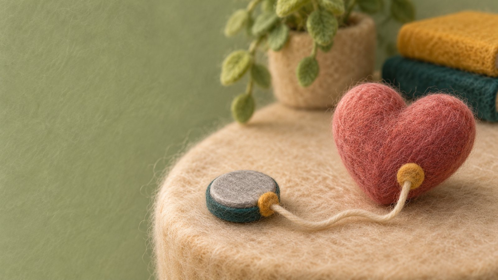

心臟節律器是什麼？誰需要裝、手術怎麼做、電池多久換一次
粉專「一千個傷心的理由」貼文素材｜
在粉專上看起來的樣子
一千個傷心的理由剛剛・公開
心臟節律器是什麼？它是植入胸口的小型裝置，心跳太慢時會發出微弱的電脈衝，讓心臟維持足夠的跳動。
門診常見的情況是，有些人這陣子老是頭暈、容易累，走幾步就喘，偶爾還有快要昏倒的感覺。家人以為是年紀大了或沒睡好，拖了一陣子才來看診，一量脈搏或做心電圖，才發現心跳很慢，甚至會停頓。
多數節律器由機身和導線兩個部分組成。機身裡有電池和控制程式，導線負責把電訊號送到心臟。節律器會自己感應心跳，心跳夠快時不介入，太慢時才補上訊號。它和心臟去顫器不同，去顫器遇到危險的快速心律時會放電電擊。
哪些人需要裝？重點是心跳太慢，而且已經造成症狀。常見的情況有第三度完全房室傳導阻斷、有症狀的第二度房室傳導阻斷、病竇症候群、頸動脈竇暈厥症候群。用白話說，房室傳導阻斷是心臟上面往下面傳的電訊號被卡住，病竇症候群是心臟自己發電的起點變差。並不是每一種心律不整都需要裝。裝之前我會先找出心跳慢的原因，有些藥物也會讓心跳過慢，由醫師換藥或調整劑量有時就能改善，請不要自己停藥或減藥。
手術怎麼做？在 X 光或超音波引導下，把導線經靜脈送到心臟，在胸口劃一個小切口，把機身放進皮下、接上導線並測試，多數約 1 小時完成。多數人住院一天左右就能回家，幾天內恢復一般活動，開車和提重物通常至少要避開一週。可能的併發症有出血、感染，少數情況會有肺部或心臟被穿刺，這些在術前我都會跟病人說明。
電池能用多久？大約 6 至 15 年，醫療團隊會定期檢查，需要時再更換。換電池就是換掉含電池的機身，傷口在原本的位置，多數情況導線留著不動。裝完後要定期回診，您自己可以做的，是固定時間量脈搏；如果量到的脈搏比節律器設定的速率少 5 次以上，或出現呼吸困難、暈厥、胸痛，要馬上就醫。
日常生活多半能照常，需要留意的是強磁場和醫療檢查。手機用另一側耳朵聽，不要放在胸前口袋。要做核磁共振或牙科治療前，先告知醫師和檢查人員，並出示識別卡。
如果真的昏倒，或心跳很慢又合併胸痛、呼吸困難，要立刻打 119 或掛急診。
心跳慢不是忍一忍就好，先找出原因，再決定要不要裝。您家裡有長輩常喊頭暈、心跳很慢嗎？留言跟我說說，您對節律器還有哪裡不放心。
每個人的狀況不同，貼文不能取代門診評估。
#心臟節律器 #心律調節器 #節律器換電池 #心跳太慢 #頭暈昏倒 #新竹馬偕 #林柏霖醫師

一千個傷心的理由這裡不回覆個人病情，也請不要留下姓名、電話或病歷資料。身體不舒服，請到門診讓醫師當面評估；如果現在胸痛、喘不過氣或快要昏倒，請直接撥 119 或到急診。
我的門診在新竹馬偕紀念醫院心臟內科，週二下午、週三上午、週四上午和週四夜診，以醫院掛號頁公告為準。
網路掛號：https://www.hc.mmh.org.tw/register_single_doctor.php?depid=14&drcode=5940
圖片長按圖片存到相簿
主文
心臟節律器是什麼？它是植入胸口的小型裝置，心跳太慢時會發出微弱的電脈衝，讓心臟維持足夠的跳動。
門診常見的情況是，有些人這陣子老是頭暈、容易累，走幾步就喘，偶爾還有快要昏倒的感覺。家人以為是年紀大了或沒睡好，拖了一陣子才來看診，一量脈搏或做心電圖，才發現心跳很慢，甚至會停頓。
多數節律器由機身和導線兩個部分組成。機身裡有電池和控制程式，導線負責把電訊號送到心臟。節律器會自己感應心跳，心跳夠快時不介入，太慢時才補上訊號。它和心臟去顫器不同，去顫器遇到危險的快速心律時會放電電擊。
哪些人需要裝？重點是心跳太慢，而且已經造成症狀。常見的情況有第三度完全房室傳導阻斷、有症狀的第二度房室傳導阻斷、病竇症候群、頸動脈竇暈厥症候群。用白話說，房室傳導阻斷是心臟上面往下面傳的電訊號被卡住，病竇症候群是心臟自己發電的起點變差。並不是每一種心律不整都需要裝。裝之前我會先找出心跳慢的原因，有些藥物也會讓心跳過慢，由醫師換藥或調整劑量有時就能改善，請不要自己停藥或減藥。
手術怎麼做？在 X 光或超音波引導下，把導線經靜脈送到心臟，在胸口劃一個小切口，把機身放進皮下、接上導線並測試，多數約 1 小時完成。多數人住院一天左右就能回家，幾天內恢復一般活動，開車和提重物通常至少要避開一週。可能的併發症有出血、感染，少數情況會有肺部或心臟被穿刺，這些在術前我都會跟病人說明。
電池能用多久？大約 6 至 15 年，醫療團隊會定期檢查，需要時再更換。換電池就是換掉含電池的機身，傷口在原本的位置，多數情況導線留著不動。裝完後要定期回診，您自己可以做的，是固定時間量脈搏；如果量到的脈搏比節律器設定的速率少 5 次以上，或出現呼吸困難、暈厥、胸痛，要馬上就醫。
日常生活多半能照常，需要留意的是強磁場和醫療檢查。手機用另一側耳朵聽，不要放在胸前口袋。要做核磁共振或牙科治療前，先告知醫師和檢查人員，並出示識別卡。
如果真的昏倒，或心跳很慢又合併胸痛、呼吸困難，要立刻打 119 或掛急診。
心跳慢不是忍一忍就好，先找出原因，再決定要不要裝。您家裡有長輩常喊頭暈、心跳很慢嗎？留言跟我說說，您對節律器還有哪裡不放心。
每個人的狀況不同，貼文不能取代門診評估。
#心臟節律器 #心律調節器 #節律器換電池 #心跳太慢 #頭暈昏倒 #新竹馬偕 #林柏霖醫師
第一則留言
這裡不回覆個人病情，也請不要留下姓名、電話或病歷資料。身體不舒服，請到門診讓醫師當面評估；如果現在胸痛、喘不過氣或快要昏倒，請直接撥 119 或到急診。
我的門診在新竹馬偕紀念醫院心臟內科，週二下午、週三上午、週四上午和週四夜診，以醫院掛號頁公告為準。
網路掛號：https://www.hc.mmh.org.tw/register_single_doctor.php?depid=14&drcode=5940
發文後馬上用粉專身分留言，不要用個人帳號。連結放留言、不放主文，臉書比較不會降低觸及。